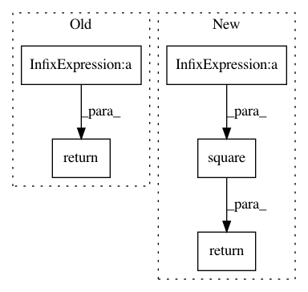

9e6be3f28d5b213e8596b8f79e68efd6d5fd21ba,deepctr/layers/normalization.py,LayerNormalization,call,#LayerNormalization#Any#,27
Before Change
def call(self, x):
mean = K.mean(x, axis=self.axis, keepdims=True)
std = K.std(x, axis=self.axis, keepdims=True)
return self.gamma * (x - mean) / (std + self.eps) + self.beta
def compute_output_shape(self, input_shape):
return input_shape
After Change
def call(self, inputs):
mean = K.mean(inputs, axis=self.axis, keepdims=True)
variance = K.mean(K.square(inputs - mean), axis=-1, keepdims=True)
std = K.sqrt(variance + self.eps)
outputs = (inputs - mean) / std
if self.scale:
outputs *= self.gamma
if self.center:
outputs += self.beta
return outputs
def compute_output_shape(self, input_shape):
return input_shape
In pattern: SUPERPATTERN
Frequency: 3
Non-data size: 5
Instances
Project Name: shenweichen/DeepCTR
Commit Name: 9e6be3f28d5b213e8596b8f79e68efd6d5fd21ba
Time: 2020-05-17
Author: last.fantasy@qq.com
File Name: deepctr/layers/normalization.py
Class Name: LayerNormalization
Method Name: call
Project Name: NifTK/NiftyNet
Commit Name: 7d9d506e77585e5600b45dc41da1a731a4b30722
Time: 2017-04-27
Author: z.eaton-rosen@ucl.ac.uk
File Name: nn/loss.py
Class Name:
Method Name: sensitivity_specificity_loss
Project Name: keras-team/keras
Commit Name: 6ffa18e3905ac8dac016111063db4bbacbc788c7
Time: 2015-11-15
Author: francois.chollet@gmail.com
File Name: keras/objectives.py
Class Name:
Method Name: mean_squared_logarithmic_error